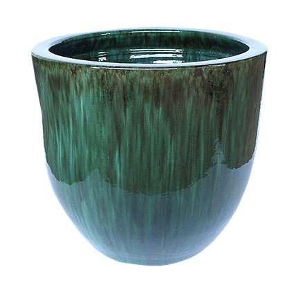
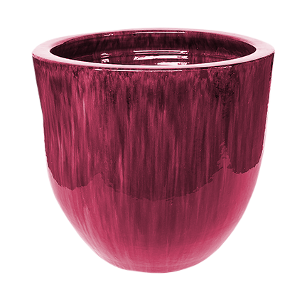
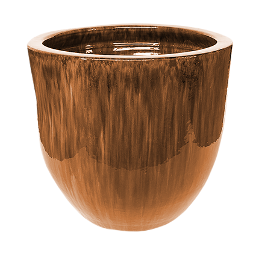
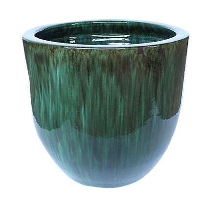
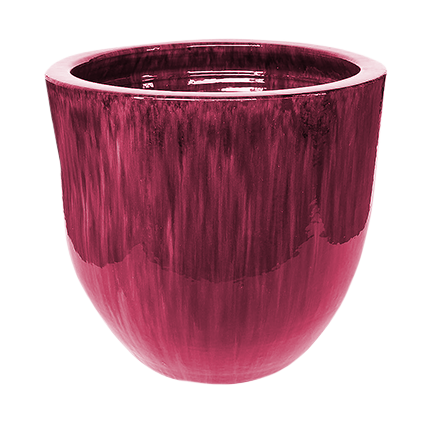
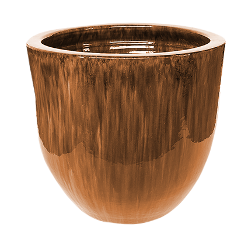

Vasos Clássicos

pesquisa

Josah Oliveira
 





R$450,00
Elegância Atemporal: Projetando Ambientes
com o Charme do Rústico em Cerâmica
com o Charme do Rústico em Cerâmica
Vasos artesanais, modelados com cerâmica rústica, encantam
com sua beleza única, adicionando sofisticação e natureza aos
ambientes contemporâneos.
com sua beleza única, adicionando sofisticação e natureza aos
ambientes contemporâneos.
Elegância Natural em Verde Esmeralda:
Vaso de cerâmica rústica, pintura manual em verde esmeralda com tinta óleo. Sofisticação natural para seus ambientes.
Arte Manual em Cada Traço:
Cada traço é uma obra única. Vaso rústico em verde esmeralda, pintura a óleo. Elegância artesanal para sua decoração.
- Altura: 25 cm
- Diâmetro: 18 cm
- Peso: 1,5 kg
- Capacidade: 2 litros